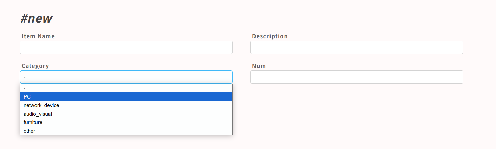
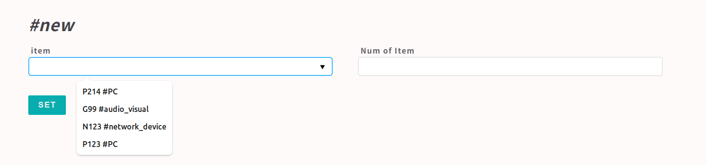

App Shell
You can generate Web application with standard css design very easily. Basically each types of App is customizable but Base App is base layer of each application, so it's recommended to generate custom App for editting codes freely without any impact to base layer. as for portal page you can edit it very easily by using both markdown and HTML, please check cookbook
Types of small-shell App
| Type | Authentication | View | Data src | Code | Data Access |
|---|---|---|---|---|---|
| Base App | Base64 encrypted Key | table,form,console,log,graph | All Databox | Basically Uneditable | Full & Flat but control rw/ro permission |
| Web Form | No auth | Web form | Specific Databox | Editable | Just push new data through dedicated Form |
| Shared Pass App | Shared Pass Code | portal,table,form,log | Specific Databox | Editable | Limitted & controllable |
| Key App | Base64 encrypted Key | portal,table,form,log | Specific Databox | Editable | Limitted & controllable |
| Other | Any #Oauth other | portal,table,form,log | Specific Databox | Editable | Limitted & controllable |
| No auth App | No authentication | portal,table,form | Specific Databox | Editable | Basically read only |
required
Please setup OS Env beorehand refering to Quick start, then start dialog by gen command.
Generate Base App
Once OS setup has been done, let's tart to generate Base App through gen dialog.
sudo /usr/local/small-shell/adm/gen -app
#-> dialog will be started
Default Web Server
small-shell contains default Web server that is written by javascipt using Node.js. it can be managed by systemctl command. ofcourse you can use your favorite Web server as well, in that case please select "other Web srv" and input detail to the dialog. we verified that small-shell can be worked without any problem on Apache and Nginx.
Define dataset for Web App
For the first step, it's required to define dataset that will be refered from App. "label" will be shown in the table and Form of App. you can also define parameters of select, radio or checkbox in the dialog. by the way, there is 2 type of primary key. please check detail on databox feature
sudo /usr/local/small-shell/adm/gen -databox
This is exmpale of dialog result.
Databox will be generated by following order, please check it
-----------------------------------------------------------------
Databox Name:inventory.db
#primary_key
name="item_name"
label="Item Name"
type="text"
option="required"
#key(col2)
name="description"
label="Description"
type="text"
option=""
#key(col3)
name="category"
label="Category"
type="select"
params="PC,network_device,audio_visual,furniture,other"
option="required"
#key(col4)
name="num"
label="Num"
type="number"
option="required"
-----------------------------------------------------------------
Note
"Data Type" is same as HTML type attribute and you can change parameter easily. besides there is special type that's defined for small-shell Web application framework.
type: select and radio
You can define parameters in the dialog. and change them anytime later.
type: pdls
"pdls" means primary data list. If you want to import primary key values as datalist from other databox, please set type as pdls in the dialog. please see detail pdls
type: mls
"mls" means member list. if you want to import user who already created in small-shell, please use mls.
This is image of dataset inserted to the App.
Parameters that is defined in the dialog will be inserted like below. 
Add / initialize user
Following example is adding user name "test", "test" can initialize and get base64 key by accessing the URL that is generated by ops command. the key will be stored to end user browser automatically using localstorage.
sudo /usr/local/small-shell/adm/ops add.usr:test
-------------------------------------------------------------------------------
This is the URL for key initialization and generation for test on Base App
-------------------------------------------------------------------------------
https://${server}/cgi-bin/auth.base?initialize=*****fce76b37e4e93b7605022da52e6ccc26fd2,4c5a2ae68d20e530b4ce457c71eae42590135268e1fb933a945f7e188678ccf4

Access URL of Base App
As you already checked, access URL is shown in the result of ops add command. if you are using small-shell default Web server, URL must be ${FQDN}/base.
e.g.) https://ec2-XX-XX-XX-XX.XXXX.com/base
Re-generate User key
If end user lost their key, you can generate URL for re-generating key.
sudo /usr/local/small-shell/adm/ops initialize.usr:test
-------------------------------------------------------------------------------
This is the URL for key initialization and generation for test on Base App
-------------------------------------------------------------------------------
https://ec2-XX-XX-XX-XX.XXXX.com/cgi-bin/auth.base?initialize=*****fce76b37e4e93b7605022da52e6ccc26fd2,4c5a2ae68d20e530b4ce457c71eae42590135268e1fb933a945f7e188678ccf4
Modify dataset
You can modify dataset anytime later.
Add | Del Column
Column can be added or deleted by gen command
sudo /usr/local/small-shell/adm/gen -addcol
sudo /usr/local/small-shell/adm/gen -delcol
Change label
Label definition can be modified directly
(e.g.) change inventory.db col2 label
sudo vi /usr/local/small-shell/databox/inventory.db/def/col2
--code--
name="description"
label="description"
type="text"
option=""
--------
Change params of select type or radio
Params can be also modified directly
(e.g.) change inventory.db col3
sudo vi /usr/local/small-shell/databox/inventory.db/def/col3
--code--
name="item_type"
label="item_type"
type="select"
params="PC,network_device,audio_visual,furniture,other"
option="required"
--------
Insert data list to Form
You can import primary data list from other databox to the Form using "pdls". following is an example that can show how you can utilize pdls.
type=pdls
Import target: inventory.db New databox : request.db <- import item list
sudo /usr/local/small-shell/adm/gen -databox
# result of dialog
-----------------------------------------------------------------
databox_name:order.db
#primary_key
name="hashid"
label="hashid"
type="text"
option="required"
#key(col2)
name="item"
label="item"
type="pdls"
pdlsbox="inventory.db"
option="required"
#key(col3)
name="num"
label="Num of item"
type="number"
option="required"
-----------------------------------------------------------------
Image of request Form using pdls is as following.
+addkvl
Besides importing primary key value, you can import 1 other column as well by adding addkvl param manually. following example is adding item_type to the importing value.
# edit target coumn, in this example col3 is target.
sudo vi /usr/local/small-shell/databox/order.db/def/col2
--code--
name="item"
label="item"
type="pdls"
pdlsbox="inventory.db"
option="required"
addkvl="category" #<- add by manually
--------

Change user permission
You can cpontroll user permission. user default permission is "read/write"
# read write permission
sudo /usr/local/small-shell/adm/ops set.attr:$user{rw}
# read only permission
sudo /usr/local/small-shell/adm/ops set.attr:$user{ro}
e.g)
# change test user to read only permission
sudo /usr/local/small-shell/adm/ops set.attr:test{ro}
MVC model
You can customize small shell by understanding similar MVC model concept.
Basic structure
# Controller
$cgi_dir (/var/www/cgi-bin #default)
|- base # Base App controller
|- auth.base # Base App authenticator
|- api
|- e-cron
|- $app # custom App controller
|- auth.$app # custom App authenticator
# Model
$bin (/var/www/bin)
|- scripts # work as Model
|- parse.sh #it will be used for parsing posted params
# View
$def (/var/www/def)
|- .html.def # store view definitions of html
# Other
$static_dir (/var/www/html)
|- index.html
|- libraries (css,js)
$app (/var/www/app)
|-index.js # small-shell default web server
|-log # default server log
$tmp (/var/www/tmp)
Data flow
Following is a data flow of App shell it will be used as Base App or Custome App
URL design
Query string will be loaded same name of valiables in the App
https://$[server]/cgi-bin/${app}?req=get&databox=inventory.db&id=1234 ..
These query string will be loaded as following value in the App
-> req=get
-> databox=inventory.db
-> id=1234
Routing in controller # Base App
Routings to the bin/scripts are defined in the controller script.
sudo vi $cgi-bin/base (e.g. /var/www/cgi-bin/base)
--code--
#----------------------------
# routing to bin/scripts
#----------------------------
#e.g. get request
case "$req" in
"get")
../bin/get.sh databox:$databox id:$id session:$session ;;
--------
Action scripts (model)
Action scripts will work with folloging STEPS
- Load parameters from QUERY string
- Load parameters from POST data
- Call DATA shell
- Insert dynamic contents to %%tags
- Render pure HTML to client
Load QUERY string (e.g. $databox,$id,$session) that will be passsed from controller as parameter
sudo vi ${bin}/get.sh (e.g. /var/www/bin/get.sh)
--code--
# load query string param
for param in $(echo $@)
do
if [[ $param == databox:* ]]; then
databox=$(echo $param | $AWK -F":" '{print $2}')
fi
if [[ $param == id:* ]]; then
id=$(echo $param | $AWK -F":" '{print $2}')
fi
if [[ $param == session:* ]]; then
session=$(echo $param | $AWK -F":" '{print $2}')
fi
done
-------
Load POST data that is stored by controller ../tmp/${session}/${key}
(e.g. item_name)
sudo vi ${bin}/get.sh (e.g. /var/www/bin/get.sh)
--code--
item_name=$(cat ../tmp/${session}/item_name)
--------
Generate data by calling DATA_shell with html format (e.g. accesing to inventory.db)
sudo vi ${bin}/get.sh (e.g. /var/www/bin/get.sh)
--code--
sudo -u small-shell ${small_shell_path}/bin/DATA_shell session:$session pin:$pin databox:inventory.db \
action:get id:$id keys:all format:html_tag > ../tmp/${session}/dataset
--------
Render HTML with inserting dynamic contents to %%tags (e.g. dataset{html_tag} from inventory.db)
sudo vi ${bin}/get.sh (e.g. /var/www/bin/get.sh)
--code--
cat ../def/get.html.def | $SED "s/^ *</</g" \
| $SED "/%%dataset/r ../tmp/${session}/dataset" \
| $SED "s/%%dataset//g"
--------
html.def (view)
Just write down pure HTML. %%tag can be replaced to dynamic contents
sudo vi ${def}/${htmldef} (e.g. /var/www/def/get.html.def)
--code--
<h2>Data.values</h2>
<p><b>#ID </b>%%id</p>
</div>
<form method="post" action="./base?%%params&req=set&id=%%id&post=yes" onclick="document.charset='utf-8';">
<ul>
%%dataset
</ul>
<button class="button" type="submit">UPDATE</button>
</form>
--------
Rendered Pure HTML
Once bin/script is executed by accessing the page, pure HTML will be rendered by inserting dynamic contents to %%dataset tag.
<h2>Data.values</h2>
<p><b>#ID </b>81416a688e358d92b2a9f2ad412cb5fa60cae8e04f611335a14c6dafe2614f1e</p>
</div>
<form method="post" action="./base?session=54c59a2567b0ac722855c801c7008a071b386f7b63ce2d6c138f5e0d94350037&pin=29449&databox=inventory.db&req=set&id=81416a688e358d92b2a9f2ad412cb5fa60cae8e04f611335a14c6dafe2614f1e&post=yes" onclick="document.charset='utf-8';">
<ul>
<li>
<label>item_name (Fixed)</label>
<p>small egg</p>
</li>
<li>
<label>description</label>
<input type="text" name="description" value="It's a small world egg" >
</li>
<li>
<label>stock</label>
<input type="hidden" name="stock" value="">
<input type="checkbox" name="stock" value="yes" checked="checked">
</li>
<li>
<label>item_type</label>
<select name="item_type" >
<option value="other">other</option>
<option value="book">book</option>
<option value="furniture">furniture</option>
<option value="electric">electric</option>
<option value="other">other</option>
</select>
</li>
</ul>
<button class="button" type="submit">UPDATE</button>
</form>
Parse
parse.sh will be used for parsing posted data. posted data will be stored to files in output dir.
PATH
${bin}/parse.sh (e.g. /var/www/bin/parse.sh)
Usage
parse.sh $session $type
input
../tmp/${session}/input (e.g. /var/www/tmp/${session}/input)
type
urlenc # normal post
multipart # multipart/form-data
binary # binary post
json #json post
output
Output will be dumped to ../tmp/${session} directory
# parsed key value
ls /var/www/tmp/${session}/${key}
# get key's value
cat /var/www/tmp/${session}/${key}
# parsed file
ls /var/www/tmp/${session}/binary_file/file_name #contain file name
ls /var/www/tmp/${session}/binary_file/binary.data #binary data
Parse usage in the App
# sudo vi ${cgi_dir}/base
sudo vi /var/www/cgi-bin/base
--code--
# dump POST data
if [ "$(echo $REQUEST_METHOD | grep -i "POST")" ];then
if [ "$(echo $CONTENT_TYPE | grep "application/json")" ];then
method=json
elif [ "$(echo $CONTENT_TYPE | grep "multipart/form-data")" ];then
method=multipart
elif [ "$(echo $CONTENT_TYPE | grep "application/octet-stream")" ];then
method=data-binary
else
method=urlenc
fi
mkdir ../tmp/${session}
# dump posted data
dd bs=${CONTENT_LENGTH} of=../tmp/${session}/input 2>/dev/null
../bin/parse.sh $session $method
fi
--------
Debug techniques
Check error log
# small-shell default web
sudo tail -f /var/www/log/srvdump.log
# ubuntu & apache2
sudo tail -f /var/log/apache2/error_log
Posted param and command result check
comment out tmp dir removal
sudo vi /var/www/bin/set.sh
--code--
#if [ "$session" ];then
# rm -rf ../tmp/${session}
#fi
--------
Then check /var/www/tmp, you can check posted params after post data on tmp dir
e.g.
$ ls /var/www/tmp
b5ee3b232da9615cb7dda3838cc689aea77b323c3623c34c509d541eef9800eb
$ cd b5ee3b232da9615cb7dda3838cc689aea77b323c3623c34c509d541eef9800eb
$ ls
category databox_list issue_link result status
check posted param
$ cat status
available
check result
$ cat result
successfully set 181210f8f9c779c26da1d9b2075bde0127302ee0e3fca38c9a83f5b1dd8e5d3b category
info: issue_link value{} is same as original value
info: status value{available} is same as original value
Exec Command check
show exec command by echo "", then you can check command and parameters. it can be chcked on browser.
sudo vi ${bin}/${script} (e.g. /var/www/bin/set.sh)
--code--
# set and get %%result contents
sudo -u small-shell ${small_shell_path}/bin/DATA_shell session:$session pin:$pin databox:$databox \
action:set id:$id keys:$keys input_dir:../tmp/${session} format:html_tag > ../tmp/${session}/result
# add echo command & sleep to show command
echo "sudo -u small-shell ${small_shell_path}/bin/DATA_shell session:$session pin:$pin databox:$databox \
action:set id:$id keys:$keys input_dir:../tmp/${session} format:html_tag > ../tmp/${session}/result"
sleep 10
--------
You could find specific command that will be executed by bin/script (e.g. set.sh), following is an example executing set.sh on Base App.

Exec command with debug mode
# Exec command on bash directly
authkey="XXXX" please input your authkey
sudo -u small-shell bash -x /usr/local/small-shell/bin/DATA_shell authkey:$authkey + "parameters that shown on the page"
Tagging on Base App
You can add tag to the table. the tag can be used for searching with specific word.
Add tag thoroug small-shell command
sudo /usr/local/small-shell/adm/ops add.tag:$databox{word}
(e.g.)
sudo /usr/local/small-shell/adm/ops add.tag:item.db{test}
Delete tag on small-shell server
sudo /usr/local/small-shell/adm/ops del.tag:$databox{word}
(e.g.)
sudo /usr/local/small-shell/adm/ops del.tag:item.db{test}
This is example of tag of word{test},
If you click the tag, search result will be shown.

Command API
You can access command API from external systems. command API priviledge is read only as default.
confirm API key
sudo cat /usr/local/small-shell/web/base | grep api_authkey
confirm API url
sudo cat /usr/local/small-shell/web/base | grep command_api
Change permission to rw (optional)
if you want to set data from external system, please change permission for api user.
sudo /usr/local/small-shell/adm/ops set.attr:api{rw}
Access to command API
please access command API from external system, you can access the data using curl very easily.
From Linux shell with curl
api_authkey="XXXX"
command_api="https://XXXX/cgi-bin/api"
databox="XXXX"
(e.g.) exec "grep test" command to index
curl -X GET "${command_api}?databox=$databox&command=grep_test" -H "X-small-shell-authkey:$api_authkey"
(e.g.) get DATA
id="0283da60063abfb3a87f1aed845d17fe2d9ba8c780b478dc4ae048f5ee97a6d5" #please input id that you want to get
curl -X GET "${command_api}?databox=$databox&keys=all&id=$id" -H "X-small-shell-authkey:$api_authkey"
(e.g.) push DATA
sudo /usr/local/small-shell/adm/ops set.attr:api{rw}
id="new" #please input id that you want to set
curl -X POST "${command_api}?databox=$databox&id=$id" -H "X-small-shell-authkey:$api_authkey" -H "Content-Type: application/json" -d '{"item_name":"item1", "description":"test"}'
From Windows power shell with curl
@External system (windwos)
$api_authkey="XXXX" #please input authkey that you confirmed
$command_api="https://XXXX/cgi-bin/api"
$databox="XXXX"
(e.g.) exec grep command to index
curl.exe -X GET "${command_api}?command=grep_test&databox=$databox" -H "X-small-shell-authkey:$api_authkey" -H "X-small-shell-databox:$databox"
(e.g.) get DATA
$id="0283da60063abfb3a87f1aed845d17fe2d9ba8c780b478dc4ae048f5ee97a6d5" #please input id that you want to get
curl.exe -X GET "${command_api}?keys=all&id=$id&databox=$databox" -H "X-small-shell-authkey:$api_authkey" -H "X-small-shell-databox:$databox"
Update SSL cert and key
When you update SSL cert and key for small-shell default Web server, you need to re-generate Base App by gen command. all service will be down during this upgrade. by the way, if you deployed automated cert with cookbook, you don't need to do anything manually.
/usr/local/small-shell/gen -app
-----------------------------------------------
Type of App (1.BASE | 2.FORM | 3.CUSTOM): 1
------------------------------------------------
-> dialog will be started
Verified environment
OS: Ubuntu 2X (recommnded), Debian 1X, macOS Tahoe, Almalinux 9.X, CentOS 7, RHEL 8
bash: 4.X
Web : Node.js 20, 19.X + express 4.X , Apache 2.X , nginx 1.X
curl: 7.X
# REQUIRED commands
Core commands : sha256sum, flock, base64
awk : above 3 that can use "IGNORECASE = 1;" option
sed : above 4.2.2 that can use "-z" option
PHP : any version which have PHP url encyption libraries